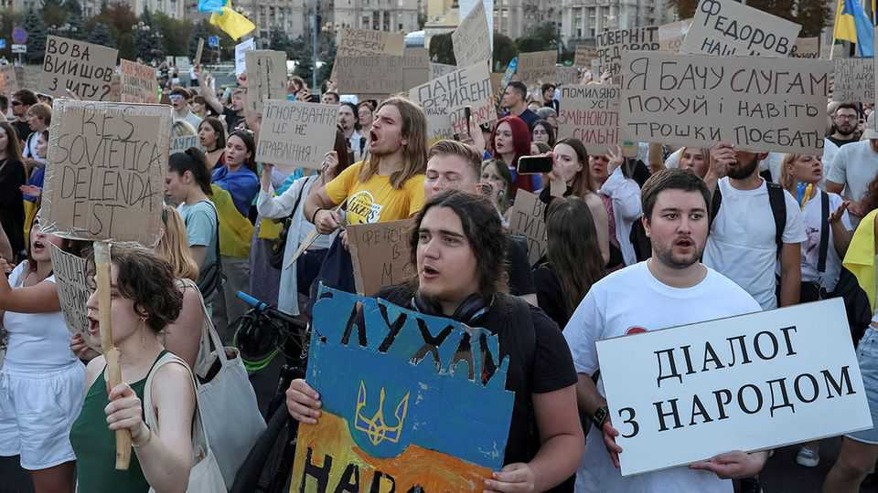

An ex-minister calls on Volodymyr Zelensky to hold elections
Most Ukrainians oppose holding them, but democratic pressure is mounting

Aug 20th 2026
LATE IN the evening of August 18th, at a time when Ukrainians usually check their phones for warnings of incoming missiles, a video post seized the public’s attention instead. The nine-minute address by Mykhailo Fedorov, who on July 15th was ousted as defence minister, was in part a final plea to be returned to his former post and in part a demand that Volodymyr Zelensky call elections.
“We must not let Putin decide when Ukrainians choose their government,” Mr Fedorov said. “Democracy cannot be held hostage by Russia.” The call for elections during wartime, which are explicitly prohibited under Ukraine’s martial law, amounted to a direct challenge to the president, whom Mr Fedorov had previously been careful not to cross.
The intervention was a response to the announcement of a vote in parliament to confirm Mr Fedorov’s successor, General Yevhenii Khmara. There was never much doubt that Mr Khmara, a war hero held in high regard, would be voted in. In the event, the vote was 312-2. An earlier motion demanding the reinstatement of Mr Fedorov had garnered just three signatures.
Sources close to the ex-minister say he knew the chances of a return were slim, but that he felt compelled to call for an urgent reset of power amid a sense that the country was on a bad trajectory. But it is not clear how an election could work, either legally or practically. With hundreds of thousands of soldiers at the front, the logistical challenges would be immense and could render the results unreliable.
Mr Zelensky’s staff says the video caught them unawares. It coincided with another headache for the president. On the morning of the parliamentary vote, Ukraine’s anti-corruption agencies announced new lines of inquiry into some of his closest allies. Detectives say they uncovered a scheme to launder bail money for suspects detained in earlier investigations. The scheme, which the perpetrators called “Operation Forrest Gump”, allegedly implicated a state-owned bank and high-ranking figures in the presidential office. By day’s end Iryna Mudra, a deputy head of the office responsible for sanctions, international tribunals and the rule of law, had been charged and dismissed from her post.
That the anti-corruption investigators came so close to Mr Zelensky is embarrassing. It also suggests his ability to rein them in, angered as they are by his earlier efforts to shut them down, is shrinking. Previous anti-corruption investigations have cost him key aides and a substantial share of his popular support. Yet polling shows Ukrainians remain overwhelmingly opposed to elections during wartime.
Even among Mr Fedorov’s supporters, reaction to his proposal is mixed. To some it looks impulsive. It could force Ukrainian politics into a treacherous situation, ahead of a winter in which Russia is expected to launch a drone and missile campaign of unprecedented ferocity. “If there’s a plan, it’s a bad one,” says an MP who is usually on Mr Fedorov’s side. Still, the intervention has put the question of elections back into public discussion. At the moment, Ukrainians do not want them. But bombardment and political chaos might change that. ■